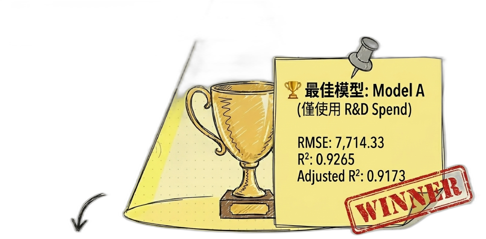
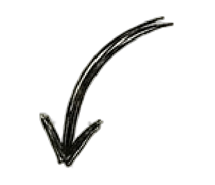

<template id="slide_05-template">
  <div data-composition-id="slide_05" data-width="2867" data-height="1600" class="slide-container">
    
    
    
    
    
    
    

    <style>
      .slide-container {
        position: relative;
        width: 100%;
        height: 100%;
        overflow: hidden;
      }
      .bg-layer {
        position: absolute;
        left: 0;
        top: 0;
        width: 100%;
        height: 100%;
        z-index: 0;
      }
      .layer {
        transform-origin: center;
      }
    </style>
    
    <script src="https://cdn.jsdelivr.net/npm/gsap@3.14.2/dist/gsap.min.js"></script>
    <script>
      window.__timelines = window.__timelines || {};
      const tl = gsap.timeline({ paused: true });
      
      tl.from("#layer_01", { y: -60, opacity: 0, duration: 0.7, ease: "power3.out" }, 0.20);
      tl.from("#layer_02", { x: -60, opacity: 0, duration: 0.7, ease: "power3.out" }, 0.45);
      tl.from("#layer_03", { x: -60, opacity: 0, duration: 0.7, ease: "power3.out" }, 0.70);
      tl.from("#layer_04", { opacity: 0, duration: 0.7, ease: "power2.out" }, 0.95);
      tl.from("#layer_05", { x: 60, opacity: 0, duration: 0.7, ease: "power3.out" }, 1.20);
      
      window.__timelines["slide_05"] = tl;
    </script>
  </div>
</template>
